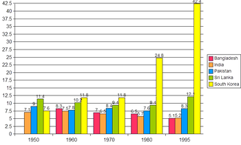
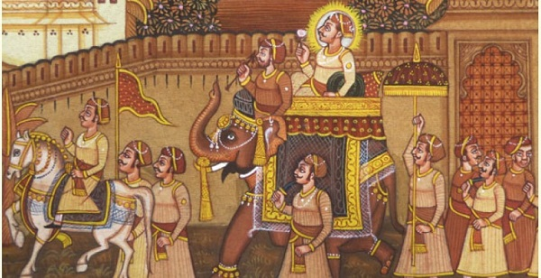
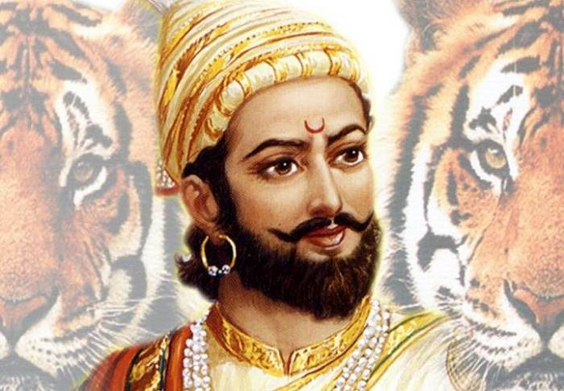

This section on the history of India covers the history of ancient, medieval and modern India, including famous historical personalities and important events.
Culture Indian:History of India
History of India
India is a land of ancient civilization. India's social, economic, and cultural configurations are the products of a long process of regional expansion. Indian history begins with the birth of the Indus Valley Civilization and the coming of the Aryans. These two phases are usually described as the pre-Vedic and Vedic age. Hinduism arose in the Vedic period. The fifth century saw the unification of India under Ashoka, who had converted to Buddhism, and it is in his reign that Buddhism spread in many parts of Asia. In the eighth century Islam came to India for the first time and by the eleventh century had firmly established itself in India as a political force. It resulted into the formation of the Delhi Sultanate, which was finally succeeded by the Mughal Empire, under which India once again achieved a large measure of political unity. It was in the 17th century that the Europeans came to India. This coincided with the disintegration of the Mughal Empire, paving the way for regional states. In the contest for supremacy, the English emerged 'victors'. The Rebellion of 1857-58, which sought to restore Indian supremacy, was crushed; and with the subsequent crowning of Victoria as Empress of India, the incorporation of India into the empire was complete. It was followed by India's struggle for independence, which we got in the year 1947.
India Timeline
Indian timeline takes us on a journey of the history of the subcontinent. Right from the ancient India, which included Bangladesh and Pakistan, to the free and divided India, this time line covers each and every aspect related to the past as well as present of the country. Read on further to explore the timeline of India.
Economic History of India
Indus valley civilization, which flourished between 2800 BC and 1800 BC, had an advanced and flourishing economic system. The Indus valley people practiced agriculture, domesticated animals, made tools and weapons from copper, bronze and tin and even traded with some Middle East countries.
Medieval Indian History
After the death of Harsha the Rajputs came into prominence on the political horizons of North India. The Rajputs were known for their bravery and chivalry but family feuds and strong notions of personal pride often resulted into conflicts. The Rajputs weakened each other by constant wrangling.
Chhatrapati Shivaji
Chatrapati Shivaji Maharaj was the founder of the Maratha Empire in western India. He is considered to be one of the greatest warriors of his time and even today, stories of his exploits are narrated as a part of the folklore. King Shivaji used the guerrilla tactics to capture a part of, the then, dominant Mughal empire.
Ancient India
The History of India begins with the Indus Valley Civilization and the coming of the Aryans. These two phases are generally described as the pre-Vedic and Vedic periods. The earliest literary source that sheds light on India's past is the Rig Veda. It is difficult to date this work with any accuracy on the basis of tradition and ambiguous astronomical information contained in the hymns.
Modern Indian History
During the late 16th and the 17th Centuries, the European trading companies in India competed with each other ferociously. By the last quarter of the 18th Century the English had outdone all others and established themselves as the dominant power in India. The British administered India for a period of about two centuries and brought about revolutionary changes in the social, political and the economic life of the country.